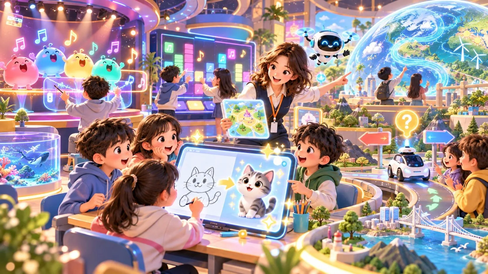
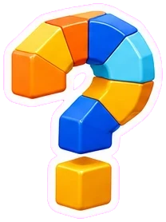

특화 10차시 · AI 사이트 갤러리 연계AI 사이트 처방전
담임 선생님과 5~6학년 친구들이 ‘처방 요청서’를 보냈어요. 요청을 꼼꼼히 읽고, 후보 4곳 중 딱 맞는 AI 사이트를 처방해 주세요.
갤러리 46곳 중 오늘 만날 사이트들

요청 읽기상황과 조건을 확인해요 처방하기4장 중 1장을 골라요
처방하기4장 중 1장을 골라요 처방전 받기10문제 뒤 나만의 처방전
처방전 받기10문제 뒤 나만의 처방전🏷️ 처방 태그 읽는 법
초록은 바로 쓰기 좋은 표시, 주황·빨강은 미리 챙길 점이에요. 연속으로 맞히면 🔥 보너스!
 어떤 사이트를 처방할까요?
어떤 사이트를 처방할까요?AI 사이트 처방전
특화 10차시 · 고학년 지원 실습
AI 사이트 명의
정답 10 / 10
📋 처방 내역
🗂️ 오늘 만난 사이트
 튜터 처방 원칙 — 수업 목표(교재 연계)에 맞는지, 가입·카메라·영어·광고 같은 태그는 어떤지, 그리고 수업 기기로 미리 열어 보기!
튜터 처방 원칙 — 수업 목표(교재 연계)에 맞는지, 가입·카메라·영어·광고 같은 태그는 어떤지, 그리고 수업 기기로 미리 열어 보기!